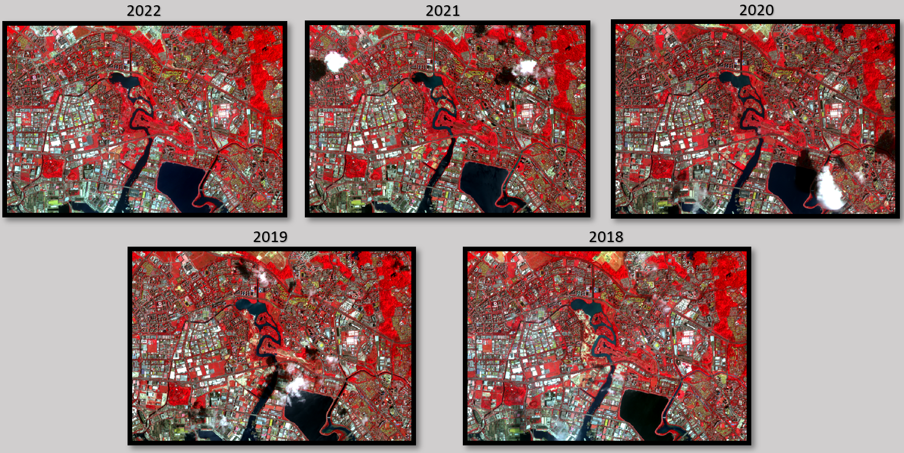
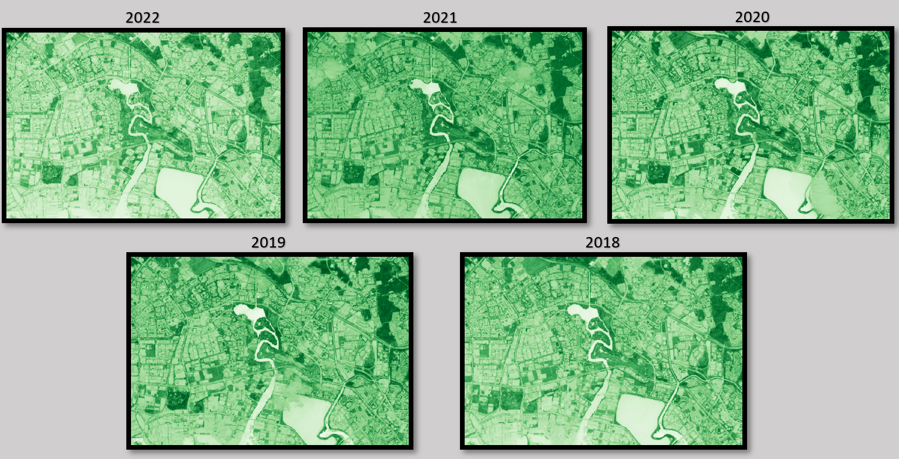
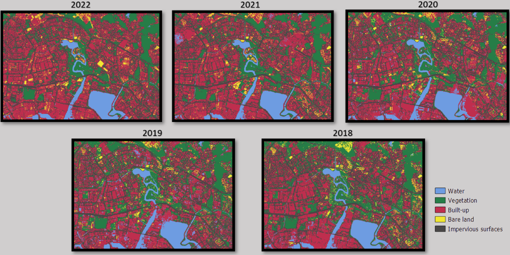
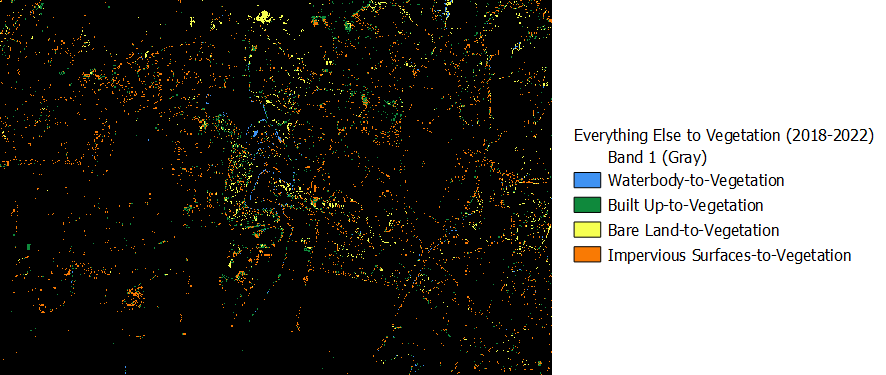
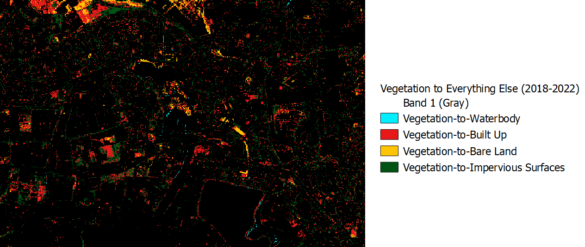
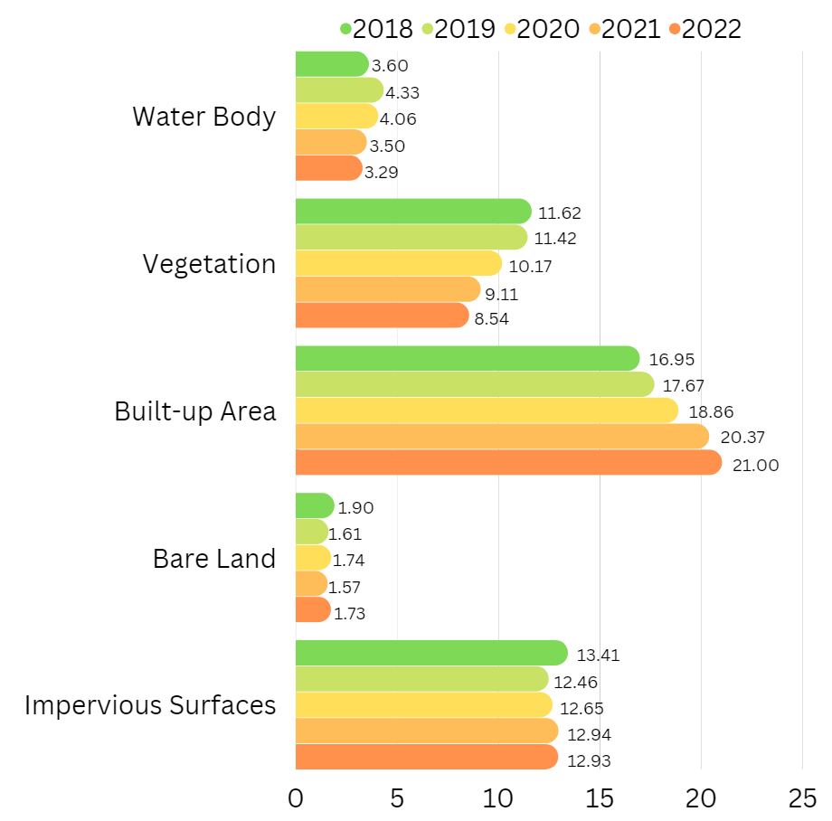
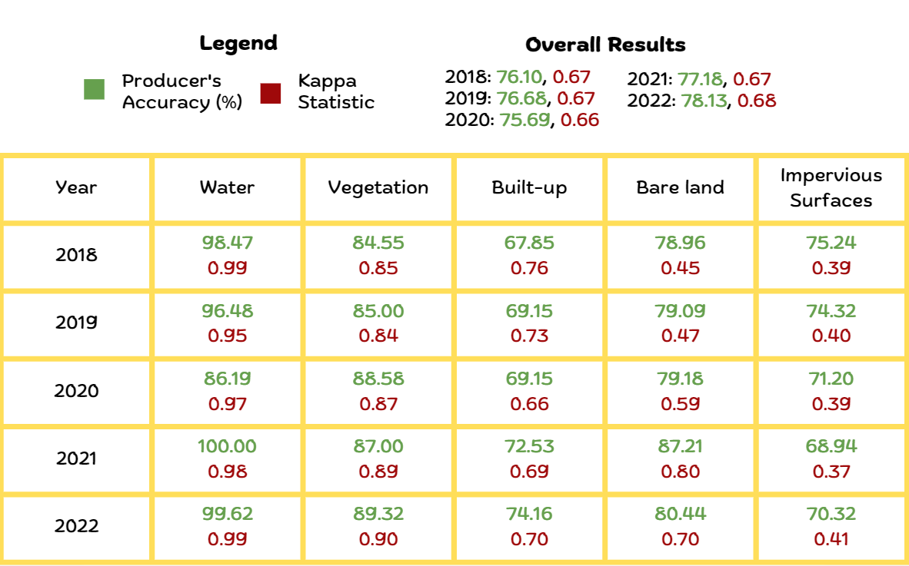

Analysis
As mentioned in our Overview, the focus of our analysis is to detect the land cover change - particularly how much vegetation - has been lost to development over the years of 2018 to 2022. In a step-by-step approach towards our analysis, we will discuss the different key insights and statistics obtained using different analytical materials created in our data preparation process.
False Colour Composite

Firstly, the False Colour Composite Scheme (FCC) is used to reveal or enhance features otherwise invisible or poorly visible to a human eye. FCC is most commonly used in assessing the plant density and their health, given that vegetation reflect near infrared and green light, while absorbing red. Given that they reflect more near infrared than green, plant-covered land appears deep red, with denser plant growth being a shade darker. The dark blue/black area represents the water body, and the lighter shades represent the urban built up places or bare land.
In Figure 1 above, We observe that there are the red areas denoting vegetation in each period over 2018-2022 is relatively significant and distinguishable. However, it is unfeasible to discern the changes in vegetation cover over the 5 years purely by observation using our naked eye.
Normalized Difference Vegetation Index (NDVI)

We also created normalized difference vegetation index (NDVI) raster images, which is an indicator that can be used to analyze remote sensing measurements, assessing whether or not the target being observed contains live green vegetation. How this works is that It normalizes the green leaf scattering in Near Infra-red wavelengths with chlorophyll absorption in red wavelengths. For Sentinel 2 data, we utilize Bands 4 (10m resolution, 665 nm wavelength, Red) and 8 (10m resolution, 842 nm wavelength, Visible and Near Infrared) to create the NDVI images, with the formula as shown below:
\[ NDVI = \frac{B8 - B4}{B8 + B4} \]
As seen in Figure 2, the darker shades of green are strong indicators of vegetation. However, similar to Figure 1, it is difficult to discern the changes in vegetation cover over the 5 years purely by observation, which is the focus of our analysis.
Classification using Random Forest

As mentioned in our data preparation process, we classified each of the years using 5 different class categories (water body, vegetation, built up, bare land, impervious surfaces) to detect the extent of each of their land cover. The approach we used to obtain the classification is different from what was taught in class, where we complemented the SCP plugin (for obtain statistical results) with the use of another plugin known as Dzetsaka (to conduct the classification). The Dzetsaka plugin provided a greater array of supervised classification algorithms for us to utilize, including SVD, Random Forest, KNN and Gaussian Mixture Model. After testing the different algorithms for classification and evaluating their producer accuracy and kappa statistics (which we will discuss in greater depth later), we concluded that the Random Forest Classifier gives the most optimal results.
The Random Forest (RF) algorithm is a supervised classification algorithm, which builds upon the concept of decision trees, where it relies on many self-learning decision trees (i.e. "Forest"), so that many base learners can come to one strong and robust decision compared to a single decision tree. For more information on this particular algorithm for image classification, do visit this site here.
Class-to-Class Change Analysis (2018 and 2022)
We next take a step further, by creating a visual representation of the change in class types between the years 2018 and 2022. The motivation behind this so that it is easier to observe the changes in land cover - particularly so to see what land covers have been changed to vegetation in the 5 years, and vice versa.


Just by visually comparing between Figures 4 and 5, we can noticeably observe how the area of land cover change away from vegetation (Figure 5) is drastically greater than the area of land cover change to vegetation (Figure 4). More significantly, we observe in Figure 5 that a large extent of the land cover changes is from the loss of vegetation towards new built up areas, as denoted by the red pixels. This is in tandem with the hypothesis that more vegetated land spaces have been given way towards development of the Jurong Lake District.
Unravelling the area of land cover change by class (km2)

Using the SCP post-processing classification report, we derive the area of land cover for each of the 5 classes over 2018-2022, with the numerical values representing the land area in \(km^2\) . Over the period of the 5 years, we observe that while the area of land cover for water body, bare land and impervious surfaces have remained relatively similar, there is a distinguishable and clear inverse relationship between vegetation and built-up areas. This is observed as the decrease in vegetation area by 3.08km² and increase in built-up area by 4.05km², This validates our hypothesis, given that land in Jurong Lake District is being zoned for transformation into the largest mixed-use business district outside of the city centre.
Evaluating the accuracy of our results
We used 2 criteria to evaluate the accuracy and precision of our classification results, namely the Producer’s accuracy and the Kappa Statistic for each of the classes.
Producer’s Accuracy
- Ranging between 0-100%, the Producer’s Accuracy indicates how accurately the classification results meet the expectation of the creator. It is the probability that a certain land cover of an area on the ground is classified as such. In ensuring the accuracy of our classification is kept to a good standard, we benchmark our producer’s accuracy so that each of the classes achieved a minimum of around 70% for all the years.
Kappa Statistic of Agreement:
Ranging between -1 and 1, the Kappa Statistic measures the inter-rater reliability of the categorized classes, providing an overall assessment of classification’s accuracy, with 1 indicating perfect agreement. The formula for deriving the kappa statistic is as follows:
\[ Kappa = \frac{Observed Agreement−Chance Agreement}{1 - Chance Agreement} \]

From our statistical report in Figure 6, we have managed to achieve relatively high overall producer accuracy scores of >70% for all the classes. As the kappa statistic accounts for false negatives and false positives, there will be a natural tendency for its value to be lower than the producer accuracy. When evaluating the kappa statistic for the different classes, we have been able to achieve relatively high scores for water body, vegetation and built up areas, while the scores for bare land and impervious surfaces are not as great. This is likely attributed to the fact that there was relatively greater difficulty in obtaining the shapfile polygons for these 2 classes when classifying the training sample.
Addressing some limitations and constraints of our analysis
Existence of Cloud Cover in raster images
One of the major constraints we faced in classifying the raster data is the existence of cloud covers in the images, despite already selecting the best ‘cloud-free’ sentinel 2 dataset that can be found in the Copernicus Open Access Hub. The existence of the cloud cover limits our ability to accurately classify regions which are being covered by the clouds. Cloud masking is also an unfeasible method for the purposes of classification due to the algorithm still being unable to accurately predict the underlying land cover once the clouds are removed.
One of the potential methods to circumvent this, while acknowledging its limitations, is to conduct image mosaicing by obtaining raster data where the dates taken are very close to each other (e.g. days apart), and piece the parts together that are cloud free. The limitation of this method is that there could potentially still be significant land cover changes between the dates in which the raster images are taken for mosaicing.
Recommendations
We acknowledge that using remote sensing to analyze the land cover change and specifically the loss of vegetation to other land uses for urban development is all but just one part of the assessment of what it means to be a ‘sustainable hub’. There are embedded nuances in determining and assessing the environmental cost when in comes to development, including the materials used for buildings in that region, the technologies used in improving water and energy efficiency, and more.
Nonetheless, to achieve URA’s vision for JLD as a sustainable urban hub, a balance should still be struck between the preservation of existing greenery and the development of new built areas. This will minimise disruptions to the local biodiversity and reduce urban heat, all while acting as protection for the mental well-being of the local populace.
Incorporating nature creatively within JLD’s mixed land use design could serve as a potential feasible solution towards reversing the loss of greenery. Taking inspiration from China’s Liuzhou Forest City, some novel ideas include greening every roof within the district, and cladding trees and plants over building façades (e.g. balconies).
Microforestry - also know as the Miyawaki Method for Creating Forests - is another concept which several cities (including The Netherlands) have adopted, which are forest the size of a tennis court that are being planted in every single neighborhood
Fundamentally, pushing feasible biophilic designs at the forefront of urban planning will certainly help to reduce the loss of nature at the expense of development.
Potential Future Work
Urban Heat Island Effect
Urban heat island effect occurs when cities replace natural land cover with dense concentrations of pavement, buildings, and other surfaces that absorb and retain heat. which increases regional temperature and energy costs. There is a strong correlation between the loss of vegetation and the corresponding increase in urban heat temperature within the same area. In our future work, we can utilize the QGIS tools analyze the extent of land temperature change over 2018-2022 in relation to the increased loss in vegetation in JLD.
Macro-Analysis of Parks
As our current scope only covers Jurong Lake District, we can expand our analysis to study land cover change in other key areas identified by the Singapore Green Plan 2030. Under the City in Nature initiative, the government aims to increase nature parks’ land area by over 50% within 10 years. By incorporating the methods used in our study, we can supplement current knowledge by investigating trends in land cover change in newly planned nature park areas.